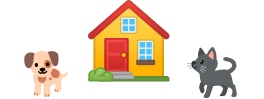
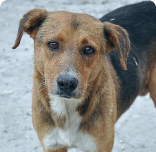

¿Quieres adoptar un mascota?
Un hogar, una mascotaMás información

¿Como puedo adoptar?
Preguntas frecuentes
¿Cómo dar en adopción?
PASY es la red de albergues más grande de La Paz

Mascotas cerca de ti

Filogmeno
Macho - Villa AdelaFilogmeno
Macho - Villa AdelaFilogmeno
Macho - Villa AdelaFilogmeno
Macho - Villa AdelaFilogmeno
Macho - Villa AdelaFilogmeno
Macho - Villa Adela¿Tienes dudas al adoptar?
Requisitos de adopción
Lista de mascotas disponibles
Preguntas frecuentes
Lista de albergues amigos